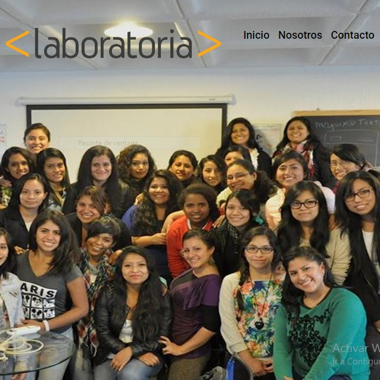
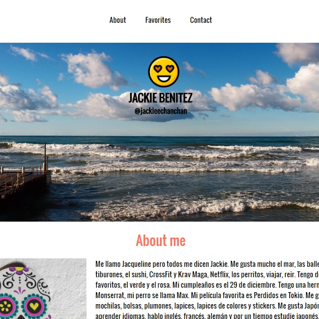
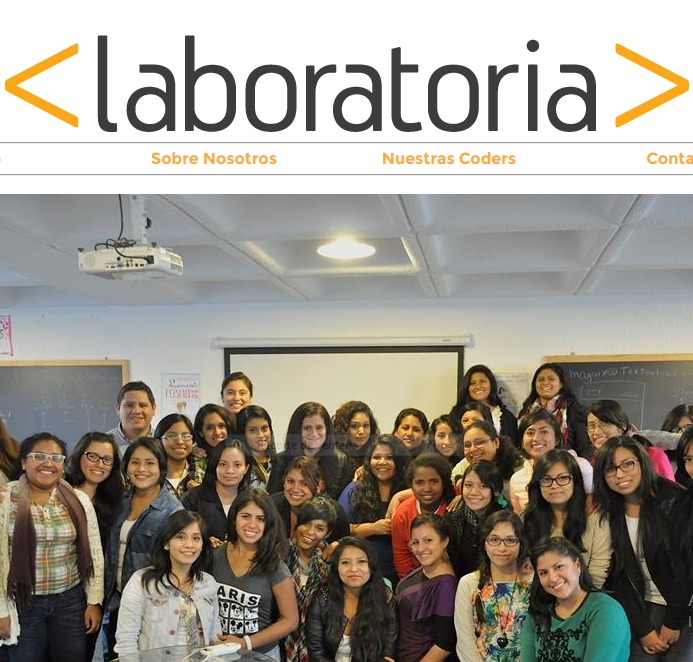
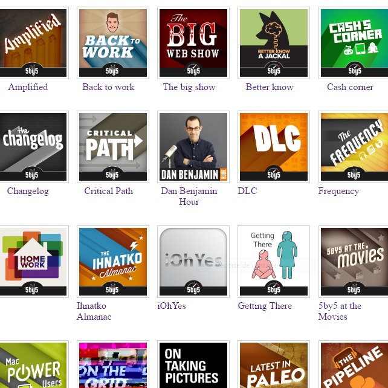

Súmate
Inicio
Portafolio
Contact
Laboratoria
Mi portafolio

Proyecto 1
En este proyecto aprendí a usar container-fluid, button y background image en el css. Continuamos con el uso de la grid de 12 columnas.
Leer Más

Proyecto 2
En este proyecto continue usando la grid de 12 columnas, container-fluid, entre otros. El ejercicio pedía usar imagenes que me describan
Leer Más

Proyecto 3
En este proyecto aprendí a usar la grid DE 12 columnas e hice uso de id para el navegador, así como la etiqueta nav.
Leer Más

Proyecto 4
En este proyecto hice uso de header, section, aside y footer. Uno de los retos fue hacer uso de números impares dentro de la grid.
Leer Más